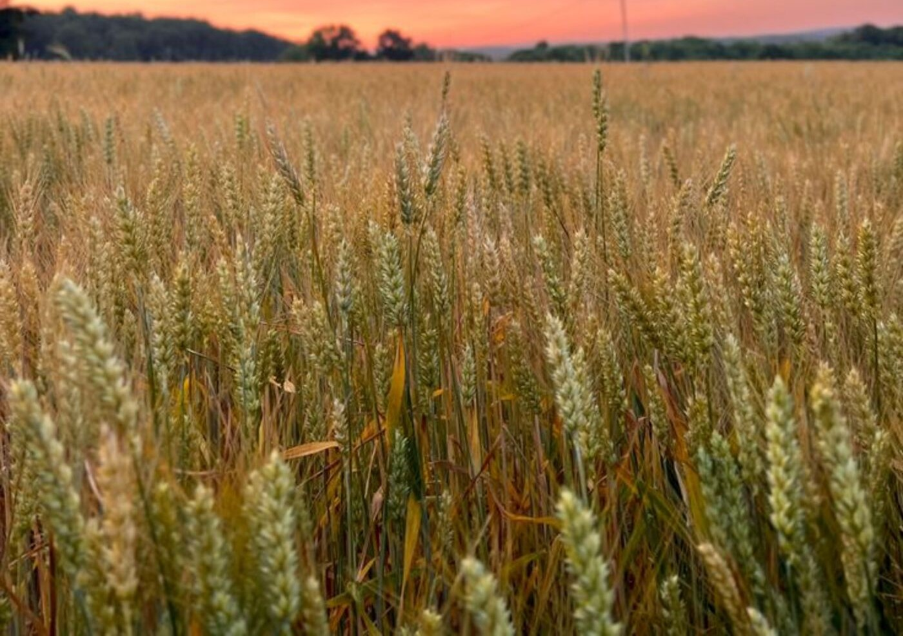
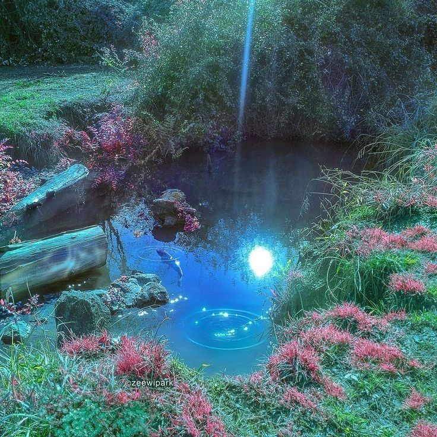

Estanque misterioso
Mira! Adelante hay un estanque
se ve bastante prometedor
Podemos seguir caminando
o regresar a buscar otro camino
¿Que harás?
Me gusta mucho el etanque

Seguir de largo

Ver el estanque